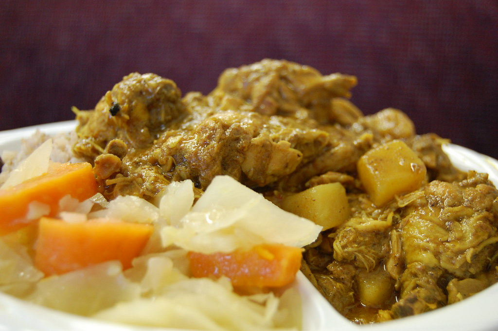

Curried Chicken

What is Curried Chicken?
Curried chicken or chicken curry as known in India and some Caribbean islands is a scrumptious chicken dish made with turmeric, curry, pepper and various other spices. It can be eaten as a main dish with your choice of side such as white rice, bread, roti or rice and peas. In my home country of Jamaica, curried chicken is a loved dish and personally one of my favorite dishes to both make and eat!
Ingredients
Approximate cook time is 45 mins.
- 2 lbs Chicken (Use Whatever Part of the Chicken Liked Most By You.)
- Curry Powder
- Turmeric (Optional)
- Scotch Bonnet Pepper or Pepper of Your Choice
- Salt
- Onion
- Green Onion/Escallion
- Pimento
- Coconut Milk or Powder (Optional)
- Garlic
- Chicken Seasoning
- 2 teaspoons olive oil
Steps
- Cut chicken into bite-sized pieces
- Clean and rinse chicken in vinegar or lime juice then rinse with plain water. (Definitely don't want salmonella lol!)
- Add chopped onions, escallion/green onion, pimento, curry powder other seasonings to the chicken. Make sure it is evenly coated
- Add 2 teaspoons of olive to heated pot.
- Add a teaspoon of curry powder to oil. Make sure the curry is sizzling in the pot before following next step.
- Place the chicken into the pot and cover the pot.
- Check the chicken every 6-10 mins to add water as needed.
- Add scotch bonnet to taste.
- If desired, mix the coconut powder with half cup water and add to pot.
- Leave to cook on medium heat, checking every 6-10 mins.
- Chicken should be tender and coated in a golden yellow color.
- Once the chicken is cooked to tenderness and there is sufficient liquid/gravy in the pot, turn off stove.
- Serve hot with a side of your choice and enjoy!